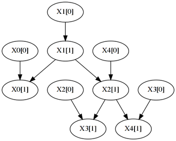
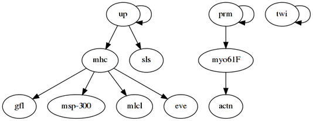
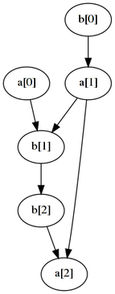
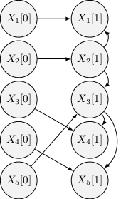
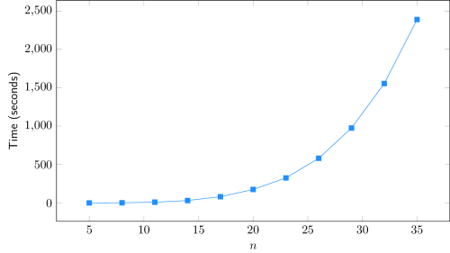
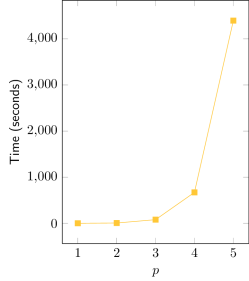
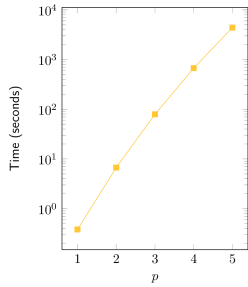
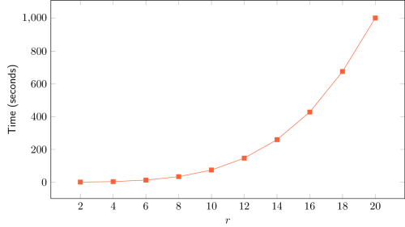

MCEC algorithm
Java implementation of an information-theoretic algorithm that combines Multivariate Correlations with Early Classification
Program description
MCEC (Multivariate Correlations for Early Classification) algorithm is a Java implementation of an information-theoretic method for examining the early classification opportunity in a dataset. This dataset contains univariate or multivariate time series together with their respective class labels. The program can be downloaded here.
Input
The input file should be in comma-separated values (CSV) format, containing the time series and the respective class labels.
- Each line is expected to correspond to one instance.
- The columns must include the features grouped per time point, chronologically organized. The last column corresponds to the class attribute.
- The first line is the header, containing the names of the attributes and the associated time point. Example: "Att1_TP1", "Att2_TP1", "Att1_TP2", "Att2_TP2".
Output
The outcomes of the difference in entropy, log-likelihood, MDL score, AIC score and classification accuracy, all for n = {1, ..., L} are outputted from the Java program in text files. The implementation uses some functionalities of Weka Data Mining Software and an additional Matlab script is provided for generating the five graphs for representing the results.
Observations
The file Appendix_SyntheticExampleOfMCECalgorithm.pdf includes a detailed explanation of the proposed method applied to a synthetically generated dataset. For clarification purposes, the functioning of the algorithm is expounded through calculation descriptions and graph analysis.
The proposed implementation provides the Markov Lag, an alternative to the standard Early Classification approach. Basically, instead of analysing the correlations from the initial time point until the last, it uses the inverse order (from the last to the first one). In this case, the idea is to check of how much information from the closest past we need, in order to obtain a satisfactory prediction.
Libraries
MCEC algorithm depends on two external libraries:
Usage
Execute the jar file:
$ java -jar MCECalgorithm.jar [dataset-filename].csv [N] [optionClass] [MarkovLag]
[dataset-filename] Type: String - Name of the dataset file to be analysed.
[N] Type: Integer - Number of features per time point.
[optionClass] Type: Boolean - With classification analysis (TRUE)
or without classification analysis (FALSE).
[MarkovLag] Type: Boolean - With Markov lag approach (TRUE)
or with standard Early Classification (FALSE).
Input file format
The input file should be in comma-separated values (CSV) format.
- The first line is the header, naming the attributes and specifying the time slice index, separared by two underscores: "attributeName__t"
- The order of the attributes must be maintained: "a__1", "b__1", "a__2", "b__2".
- The first column contains an identification (string or number) of each subject (this identifier does not affect the learnt network).
- All other lines correspond to observations of an individual over time.
- Missing values can be marked as "?" but should not occur, as the algorithm discards the observation (time slice) in question.
subject_id,resp__1,age__1,height__1,stunt__1,resp__2,age__2,height__2,stunt__2
121013, 0, 67, -3, 0, 0, 70, -3, 0
121113, 0, 27, 2, 0, 0, 30, 0, 0
121114, 0, 10, 8, 0, 0, 13, 5, 0
121140, 0, 17, 5, 0, ?, ?, ?, ?
(...)
Because the algorithm assumes a multinomial distribution, data should be already discretized to guarantee a manageable (i.e., small) number of states for each attribute, taking into account the number of observations. For example, if an attribute is observed 100 times throughout time and 50 different values are recorded, this will generally not provide enough information for learning accurate data dependences.
Dataset preprocessing script
A Python script for coverting panel data to the tDBN input format can be downloaded here. Its description and available command-line options are the following:
usage: vtoh.py [-h] [--timeInterval TIMEINTERVAL TIMEINTERVAL]
[--ignoreColumns IGNORECOLUMNS [IGNORECOLUMNS ...]]
[--discretizeColumns DISCRETIZECOLUMNS [DISCRETIZECOLUMNS ...]]
[--numberBins NUMBERBINS] [--equalFrequencyBinning]
filename idColumn timeColumn
Converts a comma-separated-values (csv) temporal data file in 'vertical
format' (panel data format, one observation per line) to an 'horizontal
format' (one subject per line) csv file. The data file must have a column with
the identification of the subject, as well as a column with the identification
of the time instant. Both of these columns are provided as arguments and must
be integer numbers. The time interval to be considered can be specified as an
argument. It is also possible to specify columns to be ignored and columns to
be discretized (as well as the number of bins and the discretization method).
positional arguments:
filename Input CSV file.
idColumn Column containing subject IDs.
timeColumn Column containing time entries.
optional arguments:
-h, --help show this help message and exit
--timeInterval TIMEINTERVAL TIMEINTERVAL
Time interval limits to be considered in the output.
--ignoreColumns IGNORECOLUMNS [IGNORECOLUMNS ...]
Columns not to be included in output file.
--discretizeColumns DISCRETIZECOLUMNS [DISCRETIZECOLUMNS ...]
Columns to be discretized.
--numberBins NUMBERBINS
Number of bins to use when discretizing, default 10.
--equalFrequencyBinning
If specified, discretization is done using equal
frequency or quantiles discretization (default is
equal width discretization).
Example #1
The first example considers a synthetic network structure with 5 attributes, each taking 8 states and with one parent from the preceding slice ([t] denotes the time-slice):

The above network that was sampled to produce the following observations files:
- synth-N50.csv, with 50 observed time transitions
- synth-N150.csv, with 150 observed time transitions
- synth-N250.csv, with 250 observed time transitions
-p 1 and use the log-likelihood (LL) score with -s ll to ensure that a maximum number of dependences is retrieved.
The command to learn the network with the 50 observations file is
$ java -jar tDBN-0.1.3.jar -i synth-N50.csv -p 1 -s lland produces the following output:
Evaluating network with LL score.
Number of networks with max score: 2
Finding a maximum branching.
Network score: 202.75732463763217
-----------------
X1[0] -> X0[1]
X2[0] -> X1[1]
X3[0] -> X2[1]
X2[0] -> X3[1]
X3[0] -> X4[1]
X0[1] -> X1[1]
X3[1] -> X2[1]
X0[1] -> X3[1]
X3[1] -> X4[1]
Activating the -d switch to directly output in dot format, and redirecting into Graphviz...
$ java -jar tDBN-0.1.3.jar -i synth-N50.csv -p 1 -s ll -d | dot -Tpng -o N50.png...produces this graph:

Although there are some matches (X2[0]->X3[1] and X3[0]->X4[1]), the learnt network is very different from the original, because the number of observations is low.
Using the 250 observations file as input to tDBN ...
$ java -jar tDBN-0.1.3.jar -i synth-N250.csv -p 1 -s llEvaluating network with LL score.
Number of networks with max score: 1
Finding a maximum branching.
Network score: 829.3579534531533
-----------------
X0[0] -> X0[1]
X1[0] -> X1[1]
X4[0] -> X2[1]
X2[0] -> X3[1]
X3[0] -> X4[1]
X1[1] -> X0[1]
X1[1] -> X2[1]
X2[1] -> X3[1]
X2[1] -> X4[1]
An improved visual representation shows the evolution of the learnt networks with the number of observations N (dashed edges are incorrect):
 |
 |
 |
Example #2
In the second example, tDBN is employed to learn a gene regulatory network. Specifically, it uses gene expression data related to the embryonic stage of Drosophila melanogaster [1]. The dataset was preprocessed as described in [2] and can be downloaded here.
As intra-slice dependences in regulatory networks are usually not reported, the option -c omits them by outputting the network in compact form, where each edge represents a dependence between a node at time slice t+1 and its parent at the previous time slice t.
For this example, each node will have at most two parents from the previous slice, which is enforced with -p 2. The minimum description length (MDL) criterion further limits the number of parents by preferring simpler network structures. The -s mdl option is currently redundant, as tDBN uses MDL by default.
The learning command is thus
$ java -jar tDBN-0.1.3.jar -i drosophila-embryonic.csv -p 2 -d -c | \
dot -Tpng -o drosophila.pngand the resulting network is:

Six out of the eight retrieved regulations (excluding the self-loops) are also reported in [3], indicating a potentially good result of tDBN. It should be noted, however, that data preprocessing may have not been the same, and that the number of observations is quite low, thus leading to many networks with maximum score.
Example #3
The last example shows how to output the network parameters and how to learn a non-stationary DBN. The dataset is very simple, consisting of 2 binary attributes measured in 7 individuals over 3 time-slices, and can be downloaded here:
id,a__0,b__0,a__1,b__1,a__2,b__2
1,0,0,0,1,1,1
2,0,1,1,0,1,0
3,0,1,0,0,1,0
4,1,1,1,1,1,0
5,1,1,0,1,1,0
6,1,1,0,1,0,0
7,0,0,0,0,0,0
To learn both the structure and the parameters of a stationary network, the following command is used:
$ java -jar tDBN-0.1.3.jar -i example3.csv -p 1 -s ll --parametersresulting in
Evaluating network with LL score.
Number of networks with max score: 1
Finding a maximum branching.
Network score: 1.4715189255145624
-----------------
a[0] -> a[1]
a[0] -> b[1]
b[1] -> a[1]
a: [0.0, 1.0]
[a[0]=1.0, b[1]=0.0]: 0.500 0.500
[a[0]=0.0, b[1]=1.0]: 1.000 0.000
[a[0]=1.0, b[1]=1.0]: 0.667 0.333
[a[0]=0.0, b[1]=0.0]: 0.667 0.333
b: [0.0, 1.0]
[a[0]=0.0]: 0.750 0.250
[a[0]=1.0]: 0.000 1.000
For every attribute (in this case, "a" and "b"), its conditional probability distribution table is present in the output. For a given table, the probability of each state of the corresponding attribute is specified, conditioned on the configurations of its parents (one per line).
Proceeding to learn a non-stationary network...
$ java -jar tDBN-0.1.3.jar -i example3.csv -p 1 -s ll --parameters --nonStationary... the output is:
Evaluating network with LL score.
Number of networks with max score: 1
Number of networks with max score: 2
Finding a maximum branching.
Network score: 0.3397980735907944
Network score: 0.5924696128065006
-----------------
b[0] -> a[1]
a[0] -> b[1]
a[1] -> b[1]
a: [0.0, 1.0]
[b[0]=1.0]: 0.600 0.400
[b[0]=0.0]: 1.000 0.000
b: [0.0, 1.0]
[a[0]=1.0, a[1]=0.0]: 0.000 1.000
[a[0]=1.0, a[1]=1.0]: 0.000 1.000
[a[0]=0.0, a[1]=1.0]: 1.000 0.000
[a[0]=0.0, a[1]=0.0]: 0.667 0.333
-----------------
a[1] -> a[2]
b[1] -> b[2]
b[2] -> a[2]
a: [0.0, 1.0]
[a[0]=1.0, b[1]=0.0]: 0.000 1.000
[a[0]=0.0, b[1]=1.0]: 0.000 1.000
[a[0]=1.0, b[1]=1.0]: 0.500 0.500
[a[0]=0.0, b[1]=0.0]: 0.500 0.500
b: [0.0, 1.0]
[b[0]=1.0]: 0.750 0.250
[b[0]=0.0]: 1.000 0.000
Or, outputting to Graphviz...
$ java -jar tDBN-0.1.3.jar -i example3.csv -p 1 -s ll --parameters \
--nonStationary | dot -Tpng -o example3.png... this graph is produced:

The tDBN learning algorithm
The tDBN algorithm jointly learns the optimal intra and inter time-slice connectivity of a DBN by constraining the search space to tree augmented networks. In a tree-augmented network, attributes (nodes) have at most one parent in the same time-slice, hence the intra-slice connectivity is a tree. An attribute can however have several parents from from preceding slices.
The following figure illustrates the structure of a tree-augmented network, with 5 attributes and one parent from the previous time-slice:

Assessment on time complexity
The tDBN learning algorithm has a theoretical time complexity of O(np+3 rp+2 N), where n is the number of network attributes, p is the number of parents from the preceding time-slice, r is the number of states of all attributes and N is the number of observations.
This section presents the results of a set of simulations to assess the algorithm's running time versus its theoretical complexity. The methodology consisted in 1) generating random tree-augmented networks, 2) sampling each of those networks to generate observations, and 3) inputting the observations to the tDBN algorithm to recover the underlying structure. The time taken by the third step of this process — the algorithm's running time — was recorded. Furthermore, the original and recovered networks were compared by evaluating the precision metric.
Each of the following subsections studies the effect of varying one of the parameters (n, p, r or N), keeping all the others constant. The default values of the parameters are:
| n | 10 |
| p | 2 |
| r | 5 |
| N | 100 |
The results are displayed as average statistics over 10 runs, also indicating the standard deviation. All simulations were run on Intel i5-3570 @ 3.40 GHz machines.
Number of attributes n
| n | Time (seconds) | Precision (%) |
| 5 | 0±0 | 60±16 |
| 8 | 2±0 | 38±11 |
| 11 | 10±0 | 27±7 |
| 14 | 31±0 | 17±6 |
| 17 | 81±1 | 14±5 |
| 20 | 175±1 | 14±4 |
| 23 | 326±2 | 8±4 |
| 26 | 581±2 | 9±4 |
| 29 | 976±4 | 9±6 |
| 32 | 1555±3 | 5±2 |
| 35 | 2389±9 | 8±2 |

The adjustment of a 4-degree polynomial curve to the obtained data (Time vs. n) yields an almost perfect fit, with R² > 0.9999. This result is in line with the theoretical complexity of O(n5), assuming other parameters constant. As n tends to larger values, only a 5-degree polynomial curve is expected to perfectly fit the data.
| Degree of the fitting polynomial | R² |
| 1 | 0.699 |
| 2 | 0.9636 |
| 3 | 0.9985 |
| 4 | 0.99998 |
| 5 | 0.999997 |
Number of parents p
| p | Time (seconds) | Precision (%) |
| 1 | 0±0 | 69±12 |
| 2 | 7±0 | 25±8 |
| 3 | 79±1 | 26±7 |
| 4 | 671±18 | 36±5 |
| 5 | 4395* | 44* |
 
| Exponential fit | R² = 0.993 |
The adjustment of an exponential curve to the obtained data (Time vs. p) yields an good fit, with R² > 0.99. It can be observed in the semi-log graph that the real curve is not a straight line, but has a slight inclination downwards. This suggests that the real complexity is sub-exponential, nevertheless being bounded by O(2p), assuming other parameters constant.
Size of attributes r
| p | Time (seconds) | Precision (%) |
| 2 | 0±0 | 55±12 |
| 4 | 3±0 | 37±12 |
| 6 | 12±0 | 22±9 |
| 8 | 33±1 | 20±7 |
| 10 | 74±1 | 22±9 |
| 12 | 147±2 | 13±7 |
| 14 | 259±4 | 13±4 |
| 16 | 428±3 | 17±6 |
| 18 | 676±5 | 17±5 |
| 20 | 1003±7 | 18±8 |

The adjustment of a 3-degree polynomial curve to the obtained data (Time vs. r) yields an almost perfect fit, with R² > 0.9999. This result is in line with the theoretical complexity of O(r4), assuming other parameters constant. As n tends to larger values, only a 4-degree polynomial curve is expected to perfectly fit the data.
| Degree of the fitting polynomial | R² |
| 1 | 0.794 |
| 2 | 0.9882 |
| 3 | 0.99991 |
| 4 | 0.99998 |
Number of observations N
| N | Time (seconds) | Precision (%) |
| 100 | 6±0 | 32±6 |
| 200 | 13±0 | 54±16 |
| 300 | 20±1 | 85±15 |
| 400 | 27±1 | 97±4 |
| 500 | 38±1 | 99±1 |
| 600 | 47±1 | 100±1 |
| 700 | 52±2 | 99±3 |
| 800 | 59±2 | 100±1 |
| 900 | 70±2 | 100±0 |
| 1000 | 77±2 | 99±2 |

The adjustment of a linear curve to the obtained data (Time vs. N) yields a good fit, with R² > 0.99. This result is in line with the theoretical complexity of O(N), assuming other parameters constant.
| Linear fit | R² = 0.9971 |
References
- Arbeitman, Michelle N., et al. "Gene expression during the life cycle of Drosophila melanogaster." Science 297.5590 (2002): 2270-2275.
- Zhao, Wentao, Erchin Serpedin, and Edward R. Dougherty. "Inferring gene regulatory networks from time series data using the minimum description length principle." Bioinformatics 22.17 (2006): 2129-2135.
- Dondelinger, Frank, Sophie Lèbre, and Dirk Husmeier. "Non-homogeneous dynamic Bayesian networks with Bayesian regularization for inferring gene regulatory networks with gradually time-varying structure." Machine learning 90.2 (2013): 191-230.